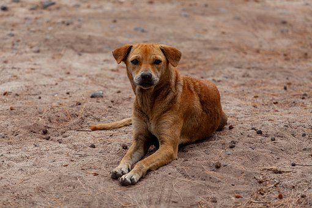

It's sad to see our beloved pals left neglected



Approximately 80% of dogs in the world our stray, on top of that since about only 10% are spayed or neutered the problem only worsens with time. Their are many ways to help, start by donating to a local shelter. This way they have more funds to feed, clean, and shelter all of the stray dogs they find.